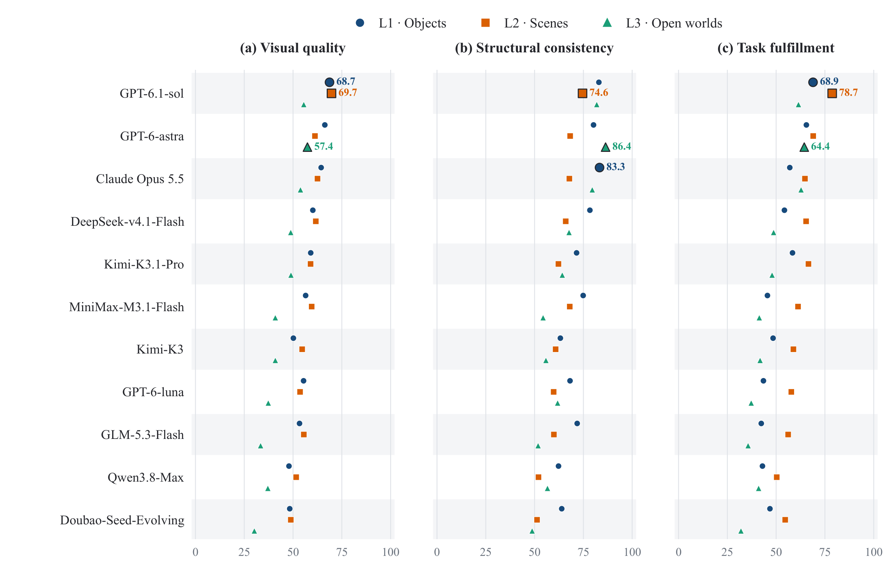
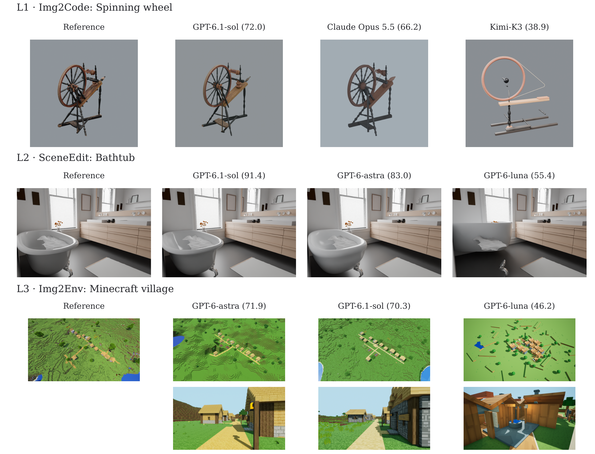
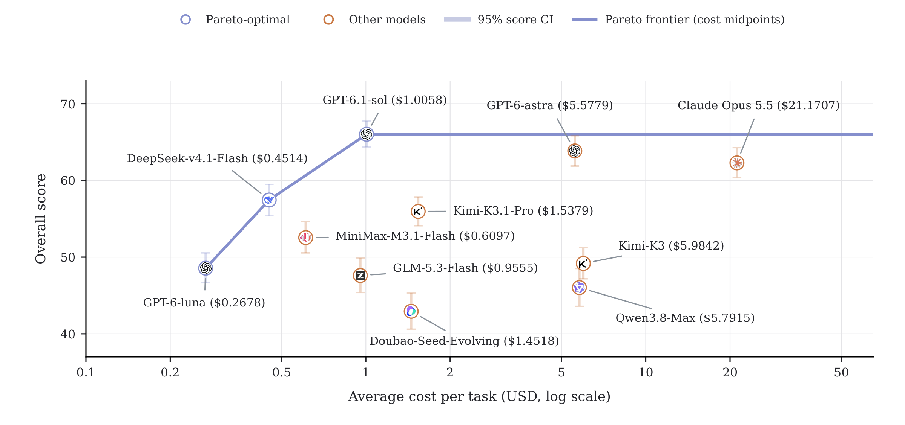

让 Agent 写一段代码生成椅子，与让它建出一个能走进去、开门、取物并保留状态的世界，要求相差很大。Frontier3DBench 将这些工作放进同一套评测，观察编码 Agent 的能力如何从物体延伸到场景和交互世界。
本文解读 Xinjie Lin、Qingle Liu、Wenyi Li 等人的 Frontier3DBench: Benchmarking Coding Agents for 3D Creation across Objects, Scenes, and Interactive Open Worlds，依据 2026 年 11 月 6 日提交的 arXiv v1。这是一篇基准论文，贡献是任务、产物检查和能力分析；它没有提出新的 3D 生成模型。项目页和官方代码提供进一步学习入口。
一、课题解读：怎样判断 Agent 真正建好了一个 3D 世界
传统 3D 创作需要建模、材质、灯光、场景布置，有交互时还要编写逻辑、碰撞和状态管理。编码 Agent 可以将自然语言或参考图转换为 Blender 脚本、Unreal Engine 工程，再执行、查看和修改产物。
这个领域的目标是得到可打开、可编辑、可执行的 3D 工程。例如，一把椅子需要有合适的形状和部件关系；一间房间需要有一致的比例、布局和灯光；一个可探索的工作坊还需要通路、能操作的机构，以及跨区域保持一致的物品和机关状态。
评价因此至少要连接三类证据：渲染图能检查外观，原生工程能检查几何与结构，运行测试能检查交互和状态。单张画面无法说明门是否真的能打开，也无法说明门打开后玩家能否顺利通过。
二、相关文献解读：从程序化建模走向可执行世界
| 工作 | 主要探索 | 与本篇的连接 |
|---|---|---|
| 3DCodeBench | 评测通过代码进行程序化 3D 建模的 Agent | 建立代码到 3D 产物的评测视角，关注几何与视觉构造 |
| BlenderWorld | 以真实参考和开放创作请求评测 Blender 产物，结合多视角渲染与任务细则 | 覆盖物体和环境创作，并揭示细粒度空间与结构复现的困难 |
| ExeWorldBench | 从单个机构推进到组合系统和意图驱动的可执行世界，考察机械与因果依赖 | 说明局部部件有效之后，仍需检验组合与行为链是否成立 |
Frontier3DBench 的组织方式是以构建单元划分物体、场景和交互世界，再为各层配置视觉、结构和行为检查。它让我们能在同一套实验中比较不同层级的能力，但各类任务仍保留不同评分公式，不能把分数当成完全相同的物理量。
三、研究问题解读：统一评测希望看清什么
下面三个问题是我们的阅读归纳，并非作者逐字列出的研究问题。
- 能力能否跨构建层级延伸？ 擅长建单个物体的配置，是否也擅长组织场景、实现交互世界？
- 生成合理内容与复现指定内容，有多大差距？ 需要区分自由度较高的文字生成，与受具体参考图约束的重建。
- 局部功能能否组合成完整活动？ 单个开关或抽屉可用之后，运动避碰、动作前置条件和持续状态是否仍正确？
评分与人类判断是否一致、获得这些分数需要多少 API 费用，是判断基准实用性的补充问题。
四、方法解读：从任务规格到独立执行与评分
第一步：按构建单元准备任务
基准共 145 道任务、9 个类别、3 个层级。物体和场景任务使用公开 3D 素材、数据集图像及作者拍摄的照片；世界任务还使用游戏截图和全景影像。作者用 GPT-6-astra 扩写创作指令及世界交互规格，再准备相应参考和检查条件。
| 层级 | 类别 | 任务数 | Agent 收到什么、需要完成什么 |
|---|---|---|---|
| L1：物体 | Text2Code | 15 | 根据文字制作指定几何与部件 |
| L1：物体 | Img2Code | 25 | 根据多视角图像重建物体 |
| L1：物体 | Img2Code-SingleView | 25 | 根据单张图像重建物体 |
| L2：场景 | Brief2Scene | 20 | 根据文字组织物体、布局和灯光 |
| L2：场景 | Ref2Scene | 10 | 根据渲染参考重建场景 |
| L2：场景 | Ref2Scene-RealPhoto | 25 | 根据真实照片重建空间与内容 |
| L2：场景 | SceneEdit | 10 | 修改初始场景中的目标，同时保留受保护内容 |
| L3：交互世界 | Text2Env | 5 | 根据文字与交互契约构建相连空间和功能 |
| L3：交互世界 | Img2Env | 10 | 根据图像、文字与交互契约复现环境并实现功能 |
来源：原论文 Table 1，PDF 第 4 页。L1 和 L2 各 65 题，L3 为 15 题。
输入可以写成“指令 + 可选图像 + 可选初始工程或素材”。用于评分的源模型和评价标注不交给 Agent；场景编辑则明确提供待修改工程。L3 还提供交互契约，规定实体、初始状态、可用操作、前置条件和物理约束。这里的开放世界指相连、可探索并支持会话内持续状态的环境，不要求每题都是巨大的室外地图。
第二步：在受限环境中制作并提交原生工程
L1/L2 交付 Blender 工程及构造或编辑代码；L1 还要求 GLB 导出，L2 要求主视角与替代视角渲染。L3 交付 Unreal Engine 工程、素材及交互逻辑，并提供任务适用的只读素材库和集成接口。
生成与评价均禁用一般网络访问，模型调用经过受限网关。L1/L2 在 2 CPU、4 GiB 内存的隔离容器中生成，提交代码由 Blender 5.2.1 执行；每题最多 6 次尝试，总预算 32 小时。新尝试由超时、传输错误或公开执行/交付检查失败触发，能收到执行错误，不能收到质量分数。这不是按隐藏得分选 best-of-6。
L3 使用 Unreal Engine 5.8.3，在 8 CPU、64 GiB 内存及分配 GPU 的持久容器中开发，时限 24 小时。这些是运行上限与环境设置，不是每题实际耗时。
第三步：分开收集外观、结构与行为证据
L1/L2 评价器执行一次基准运行和 3 次随机种子重跑，检查文件、工程可加载性、可编辑几何和依赖。这些是提交程序的执行变体，不是重新调用模型生成的独立样本。细节分取变体中的最弱值：L1 检查 8 个变体，即 4 次运行各自的原生工程与 GLB；L2 检查 4 个原生工程变体。
视觉裁判统一为 GPT-6-astra、medium 推理强度，隐藏生成者身份，用指令、参考和渲染证据逐项判分。L1/L2 的视觉等级为 0–4，再归一化；规则检查则测量尺寸、部件、空间关系、编辑范围等。参考相似度结合区域与全图的结构、色彩、明暗和边缘，定位分检查投影位置、大小和数量，不能直接等同于完整三维几何精度。
L3 会在另一工作区重建工程，由独立 observer 记录画面、几何、运动、角色路径、物品和状态变化。局部探针允许放置测试设施；连续活动测试禁止传送和重置，要求玩家真的走完整条行为链。这让“单个机构可操作”与“整个活动能完成”成为不同证据。
第四步：按任务类型计分，再汇总层级分数
下表的各分量先归一化到 0–1，最终乘 100。确认执行或交付失败的提交记零；有效产物按分量获得质量分。
| 任务类型 | 质量分公式 | 各项含义 |
|---|---|---|
| 文字生成物体或场景 | 视觉、需求满足、细节 | |
| 图像参考重建 | 视觉、图像相似度、定位、细节 | |
| 场景编辑 | 加入目标修改与受保护内容保留 | |
| 交互世界 | 外观质量、任务忠实度、空间布局、交互正确性 |
来源：原论文 Appendix A，PDF 第 16–17 页。
世界交互分进一步为 ，其中 是局部机构， 是运动避碰， 是状态与流程。 又等权组合最终状态谓词与完整路线成功。因而某个开关触发正确，仍可能在后续路径、物品状态或协同操作上失败。
层内按任务取平均并包含测得的零分，最后使用：
这不是把 145 题直接等权平均。L3 的 15 题占综合分的 40%，体现作者对整合能力的重视；同时，世界自身的公式仍将 60% 给外观、15% 给交互。高综合分不能直接解释为多数完整活动已经成功。 评分细节见附录 A。
五、实验设计与结果：先看整体表现，再拆解能力短板
主实验：11 个模型与 harness 配置的整体表现
作者让 11 个配置各完成全部 145 题，共测得 1,595 个任务分数。GPT 系列使用 Codex，Opus 使用 Claude Code，Kimi 使用 Kimi CLI，DeepSeek 使用 DSH，GLM 使用 ZCode；MiniMax、Qwen 和 Doubao 也使用 Claude Code。Qwen 使用 xhigh 推理强度，其他模型使用 max。
被比较的是“模型 + harness + 该运行协议”的配置，工具调度、上下文管理等差异也可能影响成绩。它不是把不同模型放进完全相同框架的纯模型对照。所有下列分数均为 0–100、越高越好，是任务质量平均分，不是 pass@1 或通过率。
| 模型 | Harness | 综合分 | L1：物体 | L2：场景 | L3：交互世界 |
|---|---|---|---|---|---|
| GPT-6.1-sol | Codex | 66.02 | 71.21 | 70.35 | 58.89 |
| GPT-6-astra | Codex | 63.85 | 68.63 | 62.51 | 61.28 |
| Claude Opus 5.5 | Claude Code | 62.29 | 67.37 | 62.61 | 58.23 |
| DeepSeek-v4.1-Flash | DSH | 57.45 | 63.20 | 62.00 | 49.72 |
| Kimi-K3.1-Pro | Kimi CLI | 55.96 | 61.34 | 59.42 | 49.34 |
| MiniMax-M3.1-Flash | Claude Code | 52.55 | 58.98 | 60.55 | 41.74 |
| Kimi-K3 | Kimi CLI | 49.18 | 52.45 | 55.53 | 41.96 |
| GPT-6-luna | Codex | 48.56 | 56.40 | 54.14 | 38.50 |
| GLM-5.3-Flash | ZCode | 47.61 | 56.01 | 55.92 | 35.08 |
| Qwen3.8-Max | Claude Code | 46.03 | 50.19 | 50.64 | 39.44 |
| Doubao-Seed-Evolving | Claude Code | 42.94 | 51.24 | 49.58 | 31.72 |
来源：原论文 Table 3，PDF 第 7 页。各层分别平均 65、65、15 题；综合分使用 30% / 30% / 40% 权重。
Sol 比第二名高 2.17 分，主要优势来自场景；Astra 则在两个世界类别都领先。9 个类别中，Sol 领先 6 类，Opus 领先文字物体生成，Astra 领先文字与图像世界生成。整体实验建立了有区分度的能力画像，也显示没有一个配置全面领先。它没有证明这套评分已经覆盖真实生产中的全部质量要求。
分析一：参考重建仍落后于文字生成
以 Sol 为例，文字物体生成是 82.10，多视角重建为 69.61，单视角重建为 66.26；文字场景生成是 79.87，渲染参考与照片参考重建分别为 60.95、60.86。所有配置都表现出文字物体/场景生成分高于对应参考重建分的趋势。
Qwen 的差距更明显：文字物体生成 81.98，接近 Sol，但两种重建为 43.97、37.34。这支持作者关于指定形状、布局与细节仍困难的观察。不过，两类任务的内容和公式都不同，不能把差值当作“增加图片输入”造成的因果效果，也不能仅凭单张投影分数判断所有隐藏几何。
场景编辑还揭示另一种专长：MiniMax 的编辑分 78.70，在该类别排名第二，虽然综合排名第六。选用 Agent 时，实际任务画像比一个总排名更有帮助。各类别完整数据见 Table 3。
分析二：局部机构为何不能代表完整交互能力

论文把不同公式的分量按视觉、结构和任务完成分组，并在维度内部重新归一化权重。图中的 task fulfillment 在 L1/L2 涉及细节、编辑与保留，在 L3 涉及环境覆盖和交互；它仍是维度质量分，不能直接读作完整路线成功率。
最关键的运行结果来自 全部 165 份 L3 提交，即 11 个配置 × 15 个世界任务：
| 交互分的子分量 | 平均分 / 100 | 检查什么 |
|---|---|---|
| 局部机构 | 83.08 | 实体存在、动作产生可观察效果、拒绝无效距离操作 |
| 运动避碰 | 20.82 | 抽样运动部件是否发生几何交叉 |
| 状态与流程 | 30.26 | 目标终态是否满足、连续路线是否完成 |
来源：原论文第 3.4 节和 Appendix A.2.3。这里是跨提交的分量均值，不是 165 次真实用户活动的人评成功率。
我们可以用一个教学示例理解差别：门能响应开关，支持局部功能正确；门旋转时穿墙、玩家无法通过，或取物后换区域就丢失状态，则会在运动和连续活动上失败。这个例子用于解释指标，不是论文逐步记录的某次轨迹。
权重也影响解释。按本文直接展开公式，状态与流程分 即使从零升到满分，对综合分的最大直接贡献也只有 2.1 分，来自 。这说明总分可以与较弱的连续行为能力并存，需要同时看子指标。
分析三：案例说明关系与上下文为什么重要

作者在纺车案例中报告 Sol 为 71.97、Opus 为 66.21、Kimi-K3 为 38.87：较弱产物保留轮圈和杆件，却丢失重要部件。在浴缸编辑中，Sol 91.43、Astra 82.97，能较好适应原有支撑；Luna 55.42，浴缸与脚分离且没有妥善处理布料。图中标签按一位小数显示。
这些选择性案例帮助理解结构差异，不能代替整体均值，也不能从静态截图确认整个世界的交互已经通过。
分析四：自动评分得到多大范围的人类支持
作者从 4 类参考重建任务选择 45 个条目，每项挑选 4 个有效产物，邀请 8 位评价者排序，共 360 份完整排序。具体为多视角物体 14 项、单视角物体 16 项、渲染参考场景 8 项、照片参考场景 7 项。候选包括最高、最低及接近分数区间三等分点的结果，相邻候选至少相差 4 分；模型身份和分数隐藏，标签随机排列。
自动分数与人类的平均 Kendall 为 0.727，第一名一致率 79.2%，完整顺序一致率 44.7%。同条目的人与人平均 为 0.679，来自 1,260 对排序比较。这表明该采样下自动评分与人的参考忠实度判断有较好关联，但完整排序仍有分歧。
当候选跨度至少 30 分时，25 项的平均 为 0.793；其余 20 项为 0.644。因此，人评较支持明显质量差异的排序；它没有直接验证近分配置的胜负、文字任务、编辑保留或 L3 的连续交互。协议与结果见第 3.7 节、Table 4 和附录 B.3。
分析五：费用前沿的统计口径

论文图中的每题费用约为 Luna $0.27、DeepSeek $0.45、Sol $1.01，三者构成所绘估计下的质量—费用前沿；Astra 约 $5.58、Opus 约 $21.17，综合分仍低于 Sol。这里使用作者截至 2026 年 10 月 30 日的 API 价格假设，不能作为当前报价。
更关键的是，费用只计每题最终成功生成尝试中记录的 API 用量，未覆盖此前失败重试，也不包含裁判、工具、基础设施、缓存存储或税费。DeepSeek、两个 Kimi 配置及 GLM 的记录不完整，费用是下界；点坐标还隐藏了缓存期限、价格时段与长上下文档位带来的范围。费用按 145 题等权平均，分数按层级加权，两者的权重也不同。
竖线采用层内任务配对重采样，共 100,000 次，保留层级权重；它刻画这些已评测提交的任务采样变动，不能代替多次独立生成的随机性分析。这些是配置对比、维度分解与评价验证，论文没有通过移除某个 Agent 模块的消融实验，证明某种规划或反馈机制造成了领先。 费用与不确定性口径见附录 B.2。
六、我们自己的思考
课题思考：这个领域在研究什么
我们认为，这个方向正在研究从“内容合成”走向“工程交付”的能力。工程必须同时保留指定外观、正确结构和可用行为，且需要由独立执行证据检查。Frontier3DBench 的价值是把这几类要求放到共同流程中，让局部机构与完整活动之间的落差变得可观察。
它也提示我们，层级越高，问题越依赖组合：物体部件关系要扩展为空间关系，空间关系又要服务于动作前置条件和状态传递。作者关于编码 Agent 将替代传统专用视觉流水线的判断是愿景；本篇实验尚未直接比较并证明这种全面替代。
局限问题思考：目前还存在哪些问题
第一，综合分可能弱化活动失败的重要性。 L3 虽占总分较大权重，但其内部仍偏向外观；状态与流程本身还是混合指标。实际应用若要求完整任务可用，质量平均分不足以表达交付风险。
第二，模型、框架与预算的影响尚未分离。 当前结果对应特定配置和高推理强度。15 个世界任务也较少，任务 bootstrap 无法回答换一个生成随机种子、缩短时间或更换 harness 后是否保持排序。
第三，评分验证与成本覆盖都有边界。 人类验证集中于经过分差筛选的参考重建；视觉裁判与指令扩写都使用 Astra，隐藏生成身份有帮助，但不能自动排除偏好。费用又只覆盖最终成功尝试的部分资源，难以据此预测真实复现总投入。
解决方案思考：这些问题有哪些解决方向
以下是我们的建议，尚不是作者已完成的实验。
对应第一点，可以同时报告完整路线成功率、状态保持率、碰撞失败率与视觉质量，并给出“关键功能全部通过”后的质量分。对评分权重做敏感性分析，检查更强调行为时排名如何变化；再增加动作顺序变化与跨区域往返测试，核验状态是否稳定。
对应第二点，可以在同一 harness、相同预算下比较模型，并让同一模型跨框架运行；对同题重复独立生成，报告配对差值及区间。扩充独立设计的世界和隐蔽测试，才能判断是否掌握可迁移的构建能力。
对应第三点，可以补充近分产物和真实交互的人评，引入不同模型及人工裁判复核，审计指令与评分项的一致性。成本应从首次尝试开始累计，包含失败、修复、全部评价与引擎运行，并同时报告实际时间和最终合格产物数量。这样才能回答“交付一个可靠的世界需要多少资源”。
阅读依据：论文第 2–3 节、Appendix A–B，arXiv v1；原文 PDF、项目页、官方仓库。插图来自原论文 Figure 2、4、6、5，© Xinjie Lin 等，论文许可 CC BY 4.0；第三方素材保留原始署名与各自许可，Minecraft 参考署名 Akirby80。本文未重新运行整套基准；数值为作者报告，权重展开和未来方向为我们的分析。